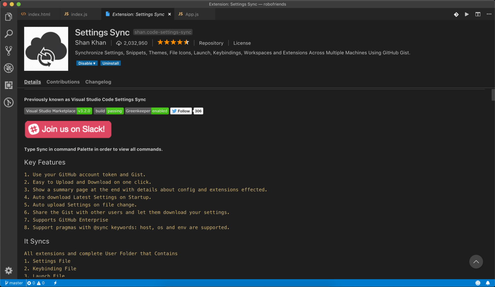
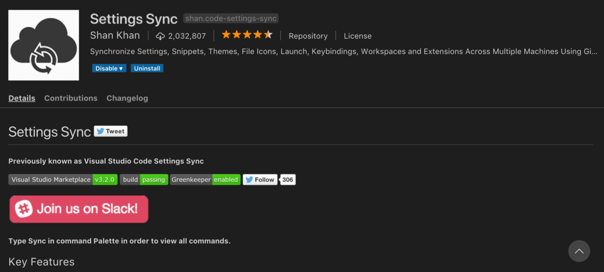
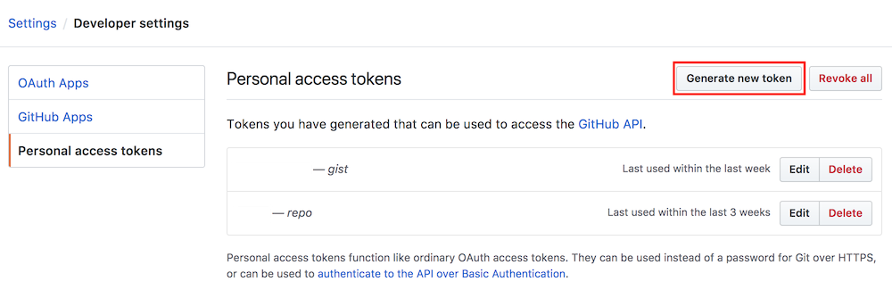
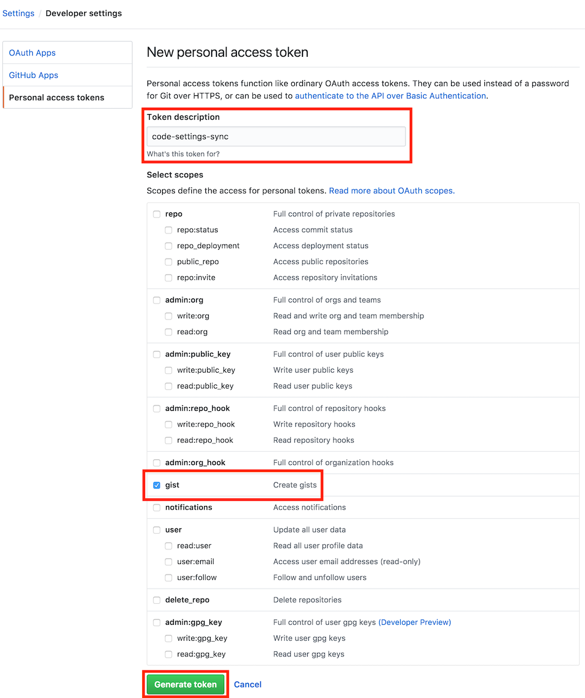
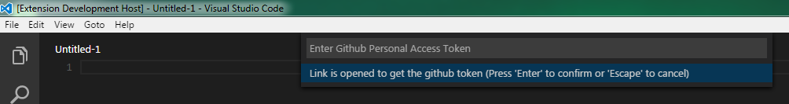
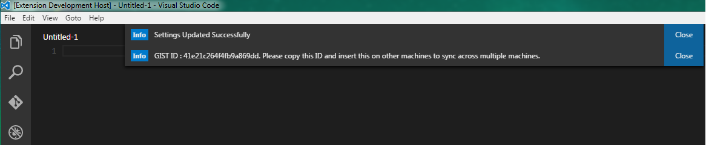
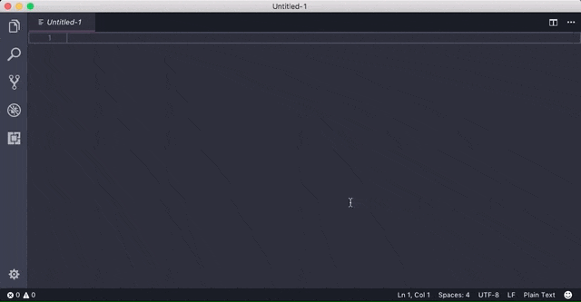
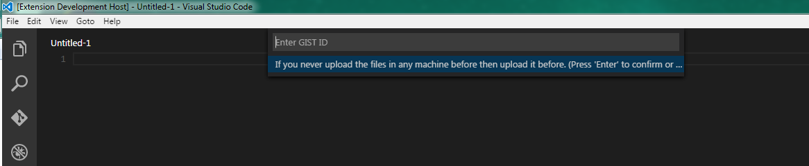
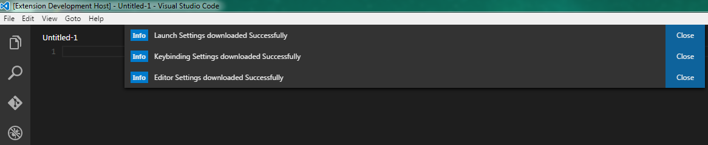
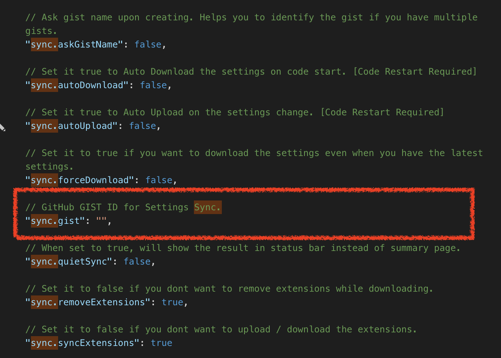

# [VSCode] 使用 Settings Sync 同步 VScode 的擴充功能與各項設定
# vscode 本身並沒有同步設定的功能，但是這個擴充功能可以達到相同的效果
由於本身工作上開發環境使用的是 VSCode (visual studio code)，並且有多台電腦使用 vscode 的需求。
一直以來，我都必須在多台電腦手工「同步」我修改的指令、新增的外掛…。這著實是一個很大的負擔。
最近得知在 VSCode Extension market 中有一款可以做到同步 VSCode 各項設定的外掛工具，也就是今天要來介紹的 — Settings Sync。
這個外掛其實是使用 Gist 來同步你的設定，因此在使用這個同步工具時，請注意先辦好一個 github 帳號。

其實這個套件的作者，在如何上傳設定組態的部分已經寫得算是完整了，所以在這邊我會用翻譯的方式將作者的使用教學重現一遍。
# 上傳 (Upload/Update Setting)
這個外掛需要使用你在 GitHub 上的 Access Token。你可以從依照以下的步驟很簡單的創造一個新的 Token（注意：創造的 Token 要有 Gist 的權限）。
首先到 Settings / Developer settings / Personal access tokens /
然後選擇 Generate New Token

在權限範圍中勾選 Gist ，然後點選 Generate token

將產生出來的 Token 好好保存（ 注意！這個 Token 絕對不能不見，因為下次進來是再也看不到的喔！）。
接下來就能夠利用剛剛的 Token 來同步 VSCode 的設定啦！
輸入 Shift + Alt + U 熱鍵或是在 VScode 的 Command Palette 輸入
> Sync Update / upload Settings
(p.s. 使用 ⌘+P 可以叫出 VSCode 的 Command Palette)
如此 Settings Sync 將會跳出一個小小的對話筐，要求你貼上你專屬的使用者權限 Token (就是你剛剛存起來的那串 Token)。
貼好剛剛保存的 Token 後，按下 Enter。

Settings Sync 會自動上傳你的各種組態設定到你的 Gist。然後外掛會給你一組產生好的 Gist ID 、 GitHub Token、Git Type 。
請記錄下來，Gist ID 將是用來下載你的組態所需的資訊。

CODE SETTINGS SYNC UPLOAD SUMMARY
Version: x.x.x
--------------------
GitHub Token: xxxxxxxxxxxxxxxxxxxxxxxxxxxxxxxxxxxxxxxx
GitHub Gist: xoxoxoxoxoxoxoxoxoxoxoxoxoxoxoxoxo
以下是作者附上的一個完整 gif ，展示怎麼開始上傳。

# 下載 (Download Settings)
使用 Shift + Alt + D 熱鍵或是在 VScode 的 Command Palette 輸入
> Sync Download Settings
會跳出對話筐要求你輸入你的 github Token。
將你的 Token 輸入後，按下 Enter。
接下來外掛會要求你輸入你的 Gist Token

當你下載成功後，會跳出成功的訊息。

一樣，作者附上了完整的操作流程。
# 使用下載的例外狀況
若你要下載同步組態的 VSCode 本身已經有本地的外掛與設定。你可能會發現，當你在下載同步的組態時，依照上方的下載步驟輸入好 github Token 後， Settings Sync 會自動幫你創好一組新的 Gist Token。然而不會跳出要求輸入 Gist Token 的對話筐。
這是因為， Settings Sync 認為你要同步本地的組態到 Gist。
這時若你還是執意要下載遠端的組態，你可以進到 VSCode 的 Settings。
使用
Perferences / Settings
在搜尋欄輸入關鍵字 Sync 找到 Settings Sync 相關的設定。
在當中找到 sync.gist 的設定。

在這邊將你的 gist ID 貼過去，之後使用同步的熱鍵 Shift + Alt + D 或是使用 VSCode 的 Command Palette 輸入
> Sync Download Settings
之後你就會發現成功下載了。
但是這個做法有一個很大的風險，此作法會覆蓋掉所有原本的外掛與設定。請謹慎使用。
# 後記
VSCode 雖然不是地表最強 IDE。但是他在我心中也算是地表最強編輯器了。很多好用的擴充套件、方便的熱鍵手勢，在在地加速程式上的開發速度。
身為一個重度 VSCode 使用者，同步功能實在是太重要了。因此做了這篇記錄，希望能夠幫助到來閱讀的每一個人。
以上就是使用 Settings Sync 的使用方式了。目前我把我所碰到的坑，與解法都寫在了這篇。
若還有疑問或不懂之處，可以留言給我。